Allegri: Miserere / Palestrina: Missa Papae Marcelli / Mundy: Vox Patris Caelestis 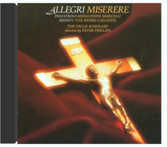 Here's a wonderful introduction to Renaissance choral music, with two tried-and-true repertory standards and the Mundy, a gorgeously sensuous example of a lesser-known mid-16th-century work, whose complex polyphonic strands are rendered with compelling involvement by the Tallis Scholars. These performances were among the group's earliest recordings and helped catapult them into the forefront of specialists in this demanding repertoire. The Allegri became a favorite back in the 1970s, a sort of choral equivalent of Albinoni's Adagio, in which repetition serves as the driving force. The Tallis Scholars give it welcome variety through spatial placement in a large church and their colorful singing. Palestrina's Missa Papae Marcelli is one of that great composer's finest works. Its mastery of polyphony while clarifying the text is said to have convinced the Church to withhold its impending ban on polyphonic church music. The group sounds larger than its 21 members because of the acoustics, the clear diction of the Scholars, and the power of their singing, always transparent and involved. They use female sopranos instead of boys' voices, so there's more heft and color than we often hear from early-music groups. Vivid engineering makes the CD even more attractive. —Dan DavisBach: Goldberg Variations 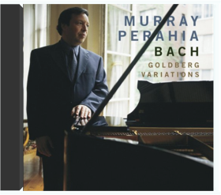 Listen to the music first! Perahia's booklet essay is a dry musicological treatise concerned with technical aspects of Bach's music. His performance, on the other hand, is filled with life and excitement. The kind of overt virtuosity heard in some of these variations has been a rarity in Perahia's recordings, but it shows how wide a range he intends to cover in his playing of this masterpiece. Unlike Glenn Gould, who is most listeners' touchstone for piano performances of the Goldbergs, Perahia takes Bach's necessary repeats and uses them as occasions for adventure, varying not only the emphases, but also the actual notes. This kind of embellishment in repeats was expected in Bach's time, but it's rare in ours. Also, taking the repeats doubles the length of the piece, making it a larger and more affecting experience—as long as the performer manages to keep those repeats alive, which Perahia certainly does. His playing of the famous 25th variation is deeply affecting without the faintest trace of sentimentality. The way he varies Bach's moods from moment to moment is extremely effective. This is, in short, one of the great recordings of Bach's "Goldberg" Variations. With Vladimir Feltsman's similarly revelatory performance currently out of the catalogs, Perahia's is probably the best piano version available. It's also one of his best recordings. —Leslie GerberBach: The Art of the Fugue 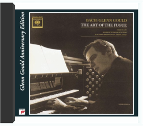 Bach: Works For Trumpet 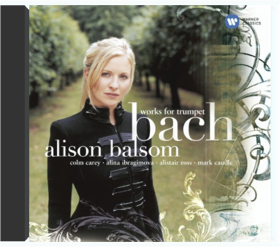 CD W/Alison Balsom, Colin Carey, Alistair Ross, Alina IbraChopin: Piano Sonatas Nos. 2 & 3 ~ Uchida 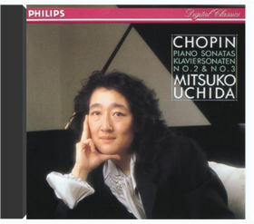 J.S. Bach: The Well-Tempered Clavier (Complete) 48 Preludes and Fugues BWV 846-893 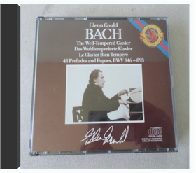 Liszt: Sonata in B minor, etc 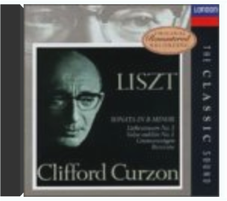 Mozart: Great Mass in C minor 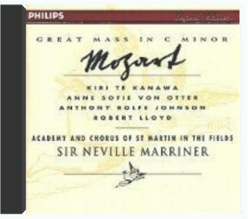 Powaqqatsi 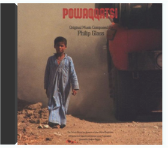 Brand New Product! Ready to despatch in 2-5 business days worldwide international delivery. Established seller since 1999.A State of Wonder: The Complete Goldberg Variations 1955 & 1981 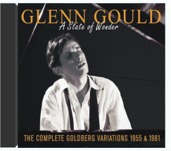 CD > BRAZILIAN MUSIC > MPB - BRAZILIAN POPULAR MUSICThis Is Techno 2 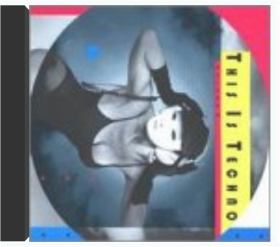 Italian Concertos  Lamentate  The Jazz Age 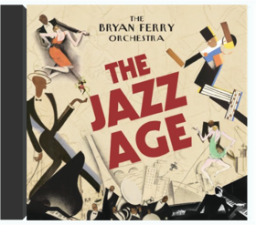 The Bryan Ferry Orchestra2013 album from legendary Rock/Pop vocalist Bryan Ferry best known as the frontman for Roxy Music. The Jazz Age is a step back to the classic Jazz era of the 1920s. By re-recording hits with top Jazz musicians, Bryan Ferry has given a new sound to his back catalog and the album includes hits such as "Don't Stop the Dance" and "Slave to Love".King of America 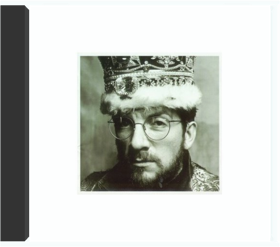 Elvis CostelloThis is the original 1990 Columbia release. Catalog #CK 40173. Still sealed.Track listing:1. Brilliant Mistake2. Lovable3. Our Little Angel4. Don't Let Me Be Misunderstood5. Glitter Gulch6. Indoor Fireworks7. Little Palaces8. I'll Wear It Proudly9. American Without Tears10. Eisenhower Blues11. Poisoned Rose12. The Big Light13. Jack Of All Parades14. Suit Of Lights15. Sleep Of The JustEn Grande 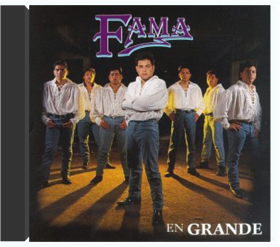 FamaFama ~ En GrandeTyranny >For You< 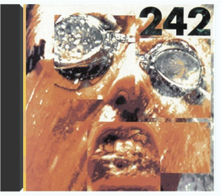 Front 242Tyranny (For You)This title is manufactured "on demand" when ordered from Amazon.com, using recordable media as authorized by the rights holder. Powered by CreateSpace, this on-demand program makes thousands of titles available that were previously unavailable. For reissued products, packaging may differ from original artwork. Amazon.com’s standard return policy will apply. Ignatz Waghalter Ignatz WaghalterThese early works reveal an exceptional melodic gift and outstanding compositional technique. The String quartet was highly praised by Joseph Joachim, the great violinist and friend of Brahms. As a student of Friedrich Gernsheim, his Sonata won the Mendelssohn Prize at the Berlin Academy of Art. Waghalter's lyrical imagination was to be subsequently expressed in his operas, performed to acclaim at the Deutsches Opernhaus in Berlin-Charlottenburg, where he was principal conductor from 1913 to 1923. For more see waghalter.comEcotone James JohnsonKind of Blue 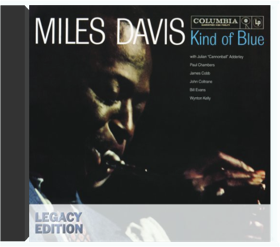 Miles DavisThis 2-CD set lets you inside the making of Miles' masterpiece; two-plus hours of audio include never-before-heard session talk, false starts and alternate takes, and extensive liner notes get deep into detail. You'll hear a 17-minute live So What from 1960, plus the studio version; Freddie Freeloader; Blue in Green; All Blues , and Flamenco Sketches one of the most bewitching, beguiling albums of all time!Every Breath You Take: The Classics  West Side Story 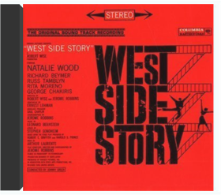 Stephen SondheimThe combined genius of Bernstein and Sondheim made West Side Story one of the quintessential American musical films of all time-and made its soundtrack one of the world's most successful albums, too. The remastered sound here is excellent, but it's the six unreleased tracks that steal the show: the Overture plus Mambo; Pas de Deux ; the Finale , and more!Love Has Come For You 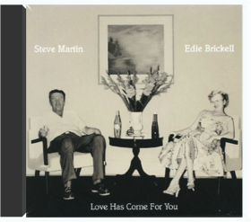 Steve Martin, Edie BrickellSteve Martin is currently in the fifth decade of a varied and accomplished career as a comedian, actor, author and playwright, and as a Grammy®-winning, boundary-pushing bluegrass banjoist and songwriter. His fellow Texas native Edie Brickell initially burst onto the national scene in the late 80s fronting the New Bohemians, and has since carved out an iconoclastic solo career that's solidified her reputation as compelling singer and a songwriter of rare insight. Although these new musical partners have already built widely-respected individual bodies of work, their inaugural duo effort is a substantial departure, as a well as a creative milestone, for both artists. Love Has Come for You offers 13 eloquently rootsy Martin/Brickell compositions that combine the former's inventive, expressive five-string banjo work with the latter's heart-tugging vocals and vivid, detail-rich lyrics. Produced by legendary musician and producer, Peter Asher, and featuring the guest stylings of Esperanza Spalding, Waddy Wachtel, Nickel Creek alumni Sara Watkins and Sean Watkins, as well as the Steep Canyon Rangers, Love Has Come For You is playful, spacious, and irresistibly accessible.Crime of the Century 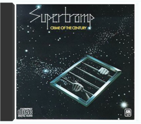 SupertrampSteering their art-rock origins into new pop territory, Supertramp made their first strike with this 1974 Top 40 LP. This is the one with their all-time classic Bloody Well Right ; the prog-pop gem Dreamer ; the dreamy title song, and more!My Favorite Liszt 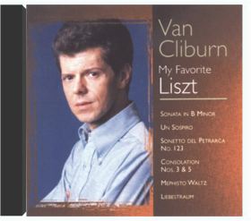 Van Cliburn |


bookshelf
Collection Total:
1,146 Items
1,146 Items
Last Updated:
Jan 4, 2014
Jan 4, 2014
 Made with Delicious Library
Made with Delicious Library